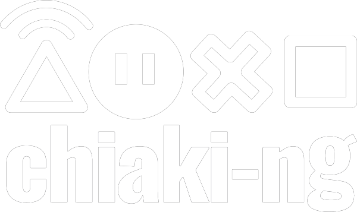

Play your PS5 on your Xbox Series X|S. Remote Play in Dev Mode, built on chiaki-ng.
Get the source ReleasesHardware HEVC/H.264 decoding with a low-latency swap chain.
Detail restore, deband, sharpening and color boost, run on the GPU.
Optional motion-interpolated 30 → 60 fps.
Add PSN accounts in the app with the on-screen keyboard.
Familiar dark interface, console list and help screen.
Controller vibration passes through from the PS5.
| Hold Menu + D-pad ↑ | Settings menu |
| Hold Menu + D-pad ↓ | PS button |
| Tap Menu | Options |
| View | Touchpad |
.msix from Device Portal → Add.cd xbox powershell -ExecutionPolicy Bypass -File make-cert.ps1 build.bat
Needs Visual Studio 2026 (C++ desktop + UWP), CMake and Git. The package ends up in xbox\AppPackages\.